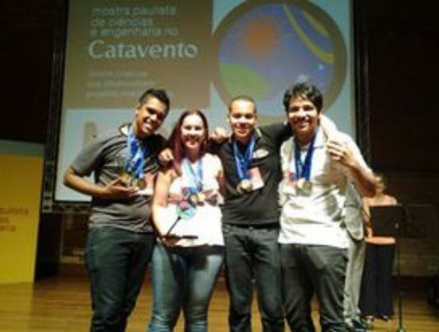
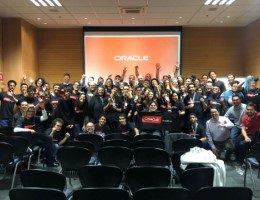
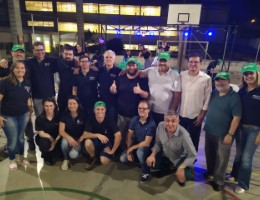
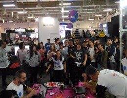
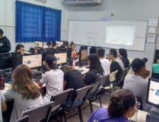
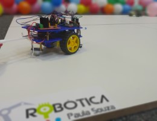
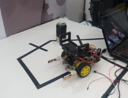

Eventos 2019.
COMPETIÇÕES
5º MARATONA DE PROGRAMAÇÃO - 2019
A 5ª Maratona de Programação realizada no sábado dia 08/06/2019, contou com a participação de 285 Equipes totalizando 804 alunos do ETIM e Técnico do Centro Paula Souza, 53 professores viabilizando esta prática junto aos alunos nas unidades e uma equipe de 6 Juízes para julgar as soluções enviadas pelas Equipes.
Uma novidade nesta edição foi a utilização do Oracle Cloud para hospedagem do software da Maratona, que atendeu perfeitamente as necessidades. Muitos professores e alunos participaram pela primeira vez, servindo principalmente de experiência para que numa próxima oportunidade, consigam um desempenho melhor, aprimorando cada vez mais suas habilidades neste tipo de desafio.

5º TORNEIRO DE ROBÔ SUMÔ
O Desafio de Robótica Paula Souza - Modalidade Robô Sumô - Etapa Sorocaba foi realizada no dia 24/10/2019 na Etec Armando Pannunzio e contou com a participação de equipes do ETIM e Modular da própria unidade.
As equipes desenvolveram robôs usando muita criatividade e tecnologia, utilizando estratégias muito bem elaboradas para a construção, visto que o tamanho e peso dos robôs são determinantes para os combates. Para esta modalidade os robôs podem ser autônomos ou controláveis utilizando apenas tecnologia sem fio.
2º HACKATHON ACADÊMICO
No 2º Semestre de 2018 e no 1º Semestre de 2019, foram realizadas Capacitações de Professores sobre Hackathon, e agora vamos agitar um pouco mais as unidades de Ensino.
Foram mais de 210 professores capacitados, atendendo a 90 Unidades de Ensino e atingindo 1190 alunos no desenvolvimento de atividades relacionadas ao Hackathon, sendo desenvolvidos 100 projetos atendendo a 13 Objetivos de Desenvolvimento Sustentáveis (Agenda 2030 da ONU), utilizando as metodologias e ferramentas apresentadas na capacitação, convergindo com as práticas realizadas pelo mercado de trabalho.
Para este ano de 2019, todas as Etec's foram convidadas para participar do Hackathon Acadêmico (Ensino Médio e Modular), cuja temática foi aplicada ao Ensino Médio. As 10 primeiras equipes colocadas foram convidadas para participar da Etapa Final, em São Paulo, no Centro Paula Souza no dia 05/11/2019. Neste dia as equipes realizaram uma apresentação (pitch de 5 minutos), para uma banca composta por Coordenadores de Projetos do Centro Paula Souza e Profissionais do Mercado, que estavam presentes para avaliar e prestigiar as equipes. Os professores mentores receberam um e-mail com orientações detalhadas sobre o encontro presencial. Todas as 129 equipes que participaram do Hackathon Acadêmico 2019 e demais interessados, foram recomendados para que participassem deste outro evento "Maratona UNICEF Samsung 2019".

#CPBR12 - CAMPUS PARTY - 2019
Modalidade: Robô Sumô O desafio caracteriza-se pelo combate entre 2 robôs que podem ser controlados ou autônomos, para que consigam empurrar seu oponente para fora da arena. A proposta desta competição é permitir que os participantes possam usar de muita criatividade e conhecimentos técnicos dentro do processo de criação dos robôs, além de muita habilidade para controlar o robô durante o combate, despertando cada vez mais o interesse e estimular o desenvolvimento de soluções usando os princípios da Robótica como forma criativa de aprendizagem.
Modalidade: Carrinho Seguidor de Linha - Nível I e II
O desafio caracteriza-se por simular um percurso (linha), para que o carrinho possa superar terrenos (áreas), vencer novos caminhos (gaps de linha), e por fim áreas fechadas (trave). A proposta desta competição é permitir que os participantes dentro do processo de criação/evolução dos carrinhos, possam cada vez mais gerar estimulo e desafios para o desenvolvimento de soluções usando os princípios da Robótica como forma criativa de aprendizagem.
ARDUINO DAY - 2019

7ª DEVCAMP - 2019
A Robótica Paula Souza registrou presença na 7ª DEVCAMP, o maior evento de tecnologia do interior de São Paulo, que reune mais de 1300 profissionais da área de desenvolvimento de softwares, para u dia com muito conteúdo, palestras, exposições e networking. Esta edção foi realizada em 16/08/2019 na Expo Dom Pedro, na cidade de Campinas/SP das 8h30 às 18h30.
Na área dedicada à Robótica Paula Souza, foram realizadas oficinas de Robótica com Arduino e Raspberry, demonstração de carrinho autônomo seguidor de linha, batalhas de Robô Sumô e duelos de carrinhos com bexigas. A proposta foi aproximar os profissionais do mercado da área de Robótica, dando a oportunidade de se divertirem e conhecer um pouco mais sobre o desenvolvimento de projetos, envolvendo Programação e Robótica, além de proporcionar uma experiência única aos alunos e professores que representaram a Robótica Paula Souza no evento.
10ª BENTOTEC - 2019
A Robótica Paula Souza registrou presença na 10ª BENTOTEC, Feira de Ciências e Tecnologia da Etec Bento Quirino, proporcionando experiências engajadoras por meio de oficinas, apresentações de projetos interativos e exposições tecnológicas inovadoras, e oportunidades de conhecimento a seus visitantes, além de proporcionar a integração, networking, novos negócios e troca de experiências bem-sucedidas entre alunos e as empresas participantes. Foram dois dias de imersão nas mais diversas áreas.
Foram mais de 110 projetos em diversas áreas da Gestão, Indústria, Tecnologia da Informação, componentes do núcleo comum, projetos intercursos, multidisciplinares e também contou com a presença de diversas empresas parceiras de várias áreas, que participaram expondo seus produtos, serviços, novas tecnologias, tendências e futuro, stands interativos com o público e muito mais. O público visitante superou 6000 pessoas durante os 2 dias de evento.
Atrações do Evento: Oficina de Games, Oficina de Arduino, Oficina de Robótica, Jogo Digitais em equipe, exposição Frida Kahlo, Espaço Maker, Realidade Virtual, Exposição fotos 10 anos Bentotec, exposição de projetos e food truck. Na área dedicada à Robótica Paula Souza, foram realizadas apresentações de projetos e demonstrações de carrinhos controlado por smartphone e carrinhos autônomos, onde o visitante teve a oportunidade de conhecer um pouco mais sobre as tecnologias que envolvem a construção destes carrinhos. Alunos da unidade que fazem parte do Projeto de Robótica. estavam alocados em stands para exposição de seus respectivos projetos.
